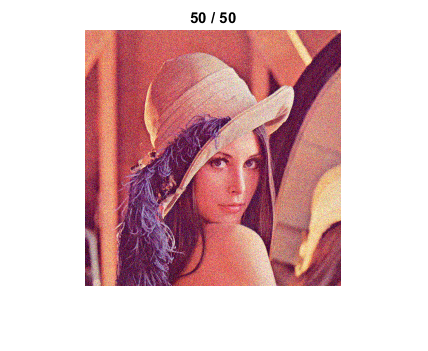
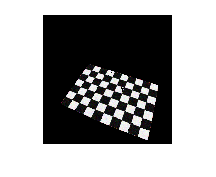

Background Subtraction
This demos shows how to use background subtraction methods provided by OpenCV. You will learn how to:
- Read data from webcam, video, or image sequences by using cv.VideoCapture.
- Create and update the background model by using cv.BackgroundSubtractorMOG class.
- Get and show the foreground mask.
As input, we will use the webcam feed, but you can also specify a video file. There exist several publicly available datasets for background subtraction that come with ground truth data. Refer to:
- Background Models Challenge (BMC) website
- Antoine Vacavant, Thierry Chateau, Alexis Wilhelm, and Laurent Lequievre. "A benchmark dataset for outdoor foreground/background extraction". In Computer Vision-ACCV 2012 Workshops, pages 291-300. Springer, 2013.
Sources:
- https://docs.opencv.org/3.2.0/db/d5c/tutorial_py_bg_subtraction.html
- https://docs.opencv.org/3.2.0/d1/dc5/tutorial_background_subtraction.html
- https://github.com/opencv/opencv/blob/3.2.0/samples/cpp/tutorial_code/video/bg_sub.cpp
- https://github.com/opencv/opencv/blob/3.2.0/samples/cpp/bgfg_segm.cpp
- https://github.com/opencv/opencv/blob/3.2.0/samples/tapi/bgfg_segm.cpp
- https://github.com/opencv/opencv/blob/3.2.0/samples/gpu/bgfg_segm.cpp
Contents
Theory
Background subtraction (BS) is a common and widely used technique for generating a foreground mask (namely, a binary image containing the pixels belonging to moving objects in the scene) by using static cameras.
As the name suggests, BS calculates the foreground mask performing a subtraction between the current frame and a background model, containing the static part of the scene or, more in general, everything that can be considered as background given the characteristics of the observed scene.

Background modeling consists of two main steps:
- Background Initialization
- Background Update
In the first step, an initial model of the background is computed, while in the second step that model is updated in order to adapt to possible changes in the scene.
Basics
Background subtraction is a major preprocessing step in many vision based applications. For example, consider the case of a visitor counter where a static camera takes the number of visitors entering or leaving the room, or a traffic camera extracting information about the vehicles etc. In all these cases, first you need to extract the person or vehicles alone. Technically, you need to extract the moving foreground from static background.
If you have an image of background alone, like an image of the room without visitors, image of the road without vehicles etc, it is an easy job. Just subtract the new image from the background. You get the foreground objects alone. But in most of the cases, you may not have such an image, so we need to extract the background from whatever images we have. It become more complicated when there are shadows of the vehicles. Since shadow also move, simple subtraction will mark that also as foreground. It complicates things.
Several algorithms were introduced for this purpose. OpenCV has implemented four such algorithms which are very easy to use. We will see them one-by-one.
BackgroundSubtractorMOG
It is a Gaussian Mixture-based Background/Foreground Segmentation Algorithm. It was introduced in the paper:
- "An improved adaptive background mixture model for real-time tracking with shadow detection" by P. KadewTraKuPong and R. Bowden in 2001.
It uses a method to model each background pixel by a mixture of K Gaussian distributions (K = 3 to 5). The weights of the mixture represent the time proportions that those colours stay in the scene. The probable background colours are the ones which stay longer and more static.
While coding, we need to create a background object using the function, cv.BackgroundSubtractorMOG. It has some optional parameters like length of history, number of Gaussian mixtures, threshold etc. It is all set to some default values. Then inside the video loop, use backgroundsubtractor.apply method to get the foreground mask.
BackgroundSubtractorMOG2
It is also a Gaussian Mixture-based Background/Foreground Segmentation Algorithm. It is based on two papers by Z. Zivkovic:
- "Improved adaptive Gausian mixture model for background subtraction" in 2004.
- "Efficient Adaptive Density Estimation per Image Pixel for the Task of Background Subtraction" in 2006.
One important feature of this algorithm is that it selects the appropriate number of Gaussian distribution for each pixel. (Remember, in last case, we took a K Gaussian distributions throughout the algorithm). It provides better adaptibility to varying scenes due illumination changes etc.
As in previous case, we have to create a background subtractor object. Here, you have an option of detecting shadows or not. If DetectShadows is true (which is so by default), it detects and marks shadows, but decreases the speed. Shadows will be marked in gray color.
BackgroundSubtractorGMG
This algorithm combines statistical background image estimation and per-pixel Bayesian segmentation. It was introduced by:
- Andrew B. Godbehere, Akihiro Matsukawa, and Ken Goldberg, "Visual Tracking of Human Visitors under Variable-Lighting Conditions for a Responsive Audi Art Installation" in 2012.
As per the paper, the system ran a successful interactive audio art installation called:
- "Are We There Yet?" from March 31 - July 31 2011 at the Contemporary Jewish Museum in San Francisco, California.
It uses first few (120 by default) frames for background modelling. It employs probabilistic foreground segmentation algorithm that identifies possible foreground objects using Bayesian inference. The estimates are adaptive; newer observations are more heavily weighted than old observations to accommodate variable illumination. Several morphological filtering operations like closing and opening are done to remove unwanted noise. You will get a black window during first few frames.
It would be better to apply morphological opening to the result to remove the noises.
BackgroundSubtractorKNN
See the docs.
Code
Create BG subtractor object
nHistory = 50; if true bs = cv.BackgroundSubtractorMOG('History',nHistory, ... 'NMixtures',5, 'BackgroundRatio',0.2, 'NoiseSigma',7); elseif true bs = cv.BackgroundSubtractorMOG2('History',nHistory); elseif true bs = cv.BackgroundSubtractorKNN('History',nHistory); elseif true bs = cv.BackgroundSubtractorGMG(... 'InitializationFrames',20, 'DecisionThreshold',0.7); elseif true bs = cv.BackgroundSubtractorCNT(); elseif true bs = cv.BackgroundSubtractorLSBP(); else bs = cv.BackgroundSubtractorGSOC(); end
Set up camera
cap = createVideoCapture([], 'lena'); pause(2); % Necessary in some environment. See help cv.VideoCapture assert(cap.isOpened(), 'Camera failed to initialized');
Read a frame
im = cap.read(); assert(~isempty(im), 'Failed to read frame'); im = cv.resize(im, 0.5, 0.5); disp('The subtractor will learn the background for a few seconds.'); disp('Keep out of the frame.');
The subtractor will learn the background for a few seconds. Keep out of the frame.
Learn initial background model for a while. At this stage, every frame is used both for calculating the foreground mask and for updating the background model. You can specify the learning rate used for updating the background, or use -1 to instruct the algorithm to automatically chose a learning rate.
hImg = imshow(im); for t = 1:nHistory % Get an image im = cap.read(); if isempty(im), break; end im = cv.resize(im, 0.5, 0.5); % Learn background bs.apply(im, 'LearningRate',-1); % Show current frame and progress set(hImg, 'CData',im); title(sprintf('%d / %d', t, nHistory)); drawnow; end disp('Finished.');
Finished.
cap = createVideoCapture([], 'chess');Start main loop
hImg = imshow(im); while ishghandle(hImg) % Get an image im = cap.read(); if isempty(im), break; end im = cv.resize(im, 0.5, 0.5); % Perform background subtraction and get foreground mask fg = bs.apply(im, 'LearningRate',0); % Process mask if true fg = cv.dilate(cv.erode(fg)); else fg = cv.GaussianBlur(fg, 'KSize',[11 11], 'SigmaX',3.5, 'SigmaY',3.5); fg = cv.threshold(fg, 10); end % Show masked image %im = cv.bitwise_and(im, repmat(fg,[1 1 3])); im = cv.copyTo(im, 'Mask',fg); set(hImg, 'CData',im); drawnow; end
Close webcam feed
cap.release();